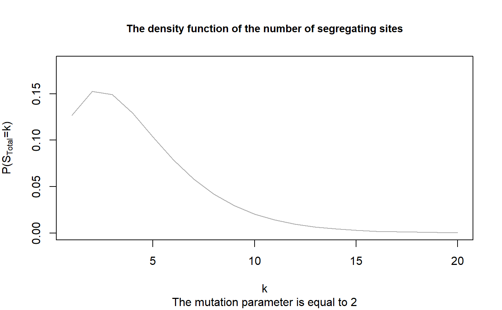
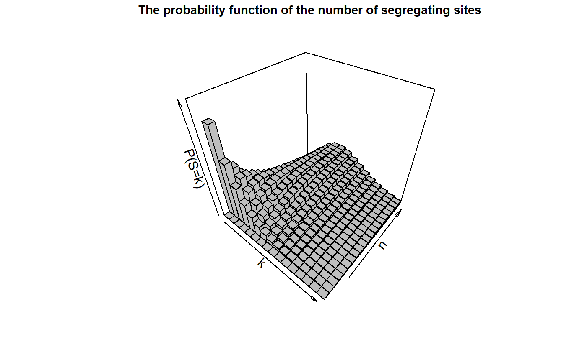

R/DocumentationNumberOfSegregatingSites.R
dSegregatingSites.RdThe density function of the total number of segregating sites
dSegregatingSites(n, theta, k, plot = FALSE)
| n | the sample size (n >= 1). |
|---|---|
| theta | the mutation parameter (theta > 0). |
| k | a non-negative number or a non-negative vector. |
| plot | a logical value indicating whether the function should plot the density of the total number of segregating sites for the given values of k. |
Mogens Bladt and Bo Friis Nielsen (2017): Matrix-Exponential Distributions in Applied Probability. Probability Theory and Stochastic Modelling (Springer), Volume 81.
Asger Hobolth, Arno Siri-Jégousse, Mogens Bladt (2019): Phase-type distributions in population genetics. Theoretical Population Biology, 127, pp. 16-32.
The function returns the probabilities \(P(S=k)\) for all values
of \(k\). Hence, the returned object is of the same length as \(k\).
If plot=TRUE, the function also plots the densities as a function of
\(k\).
The density of the total number of segregating sites can be obtained
by the aid of the block counting process together with the reward
transformation and the discretization. For more information on this topic see vignette("PhaseTypeGenetics") or
Hobolth et al. (2019): Phase-type distributions in population genetics.
## Computing the density for a sample of n=5 dSegregatingSites(n=5,theta=2,k=5)#> [1] 0.1036655dSegregatingSites(n=5,theta=2,k=1:20, plot=TRUE)#> [1] 0.1266666667 0.1525185185 0.1489703704 0.1290840329 0.1036655062 #> [6] 0.0790962322 0.0582267130 0.0417770932 0.0294189603 0.0204327206 #> [11] 0.0140467495 0.0095830512 0.0065004518 0.0043905141 0.0029558555 #> [16] 0.0019851574 0.0013307979 0.0008909051 0.0005958007 0.0003981367## We apply the function for different sample sizes ## and theta=2 k_vec <- 0:15 theta <- 2 ## Defining a matrix of results Res_Mat <- dSegregatingSites(n = 1, theta = theta, k = k_vec) ## And Applying the function for all n in {2,...,20} for(n in 2:20){ Res_Mat <- cbind(Res_Mat, dSegregatingSites(n = n, theta = theta, k = k_vec)) } ## We reproduce Figure 4.1 in John Wakeley (2009): ## "Coalescent Theory: An Introduction", ## Roberts and Company Publishers, Colorado. ## by using the package plot3D. plot3D::hist3D(x=k_vec, y=1:20, z=Res_Mat, col = "grey", border = "black", xlab = "k", ylab = "n", zlab = "P(S=k)", main = "The probability function of the number of segregating sites", sub = expression(paste("The mutation parameter is ", theta,"= 2")), cex.main = 0.9, colkey = FALSE, zlim = c(0,0.4))